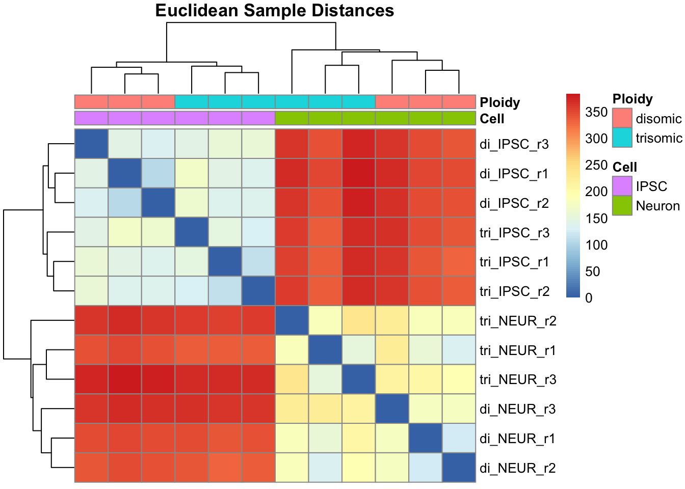

Exploratory Data Analysis
We will be performing some exploratory data analysis with the goal of getting to grips with your chosen data set to properly identify a strategy for the actual analysis steps. During this exploration we will also keep an eye on the quality of the data. Even though the downloadable data is ‘processed’, there might be samples present that deviate too much from the other group of samples (a so called outlier). Creating basic visualizations of the data will give the necessary insight before we continue. We first start by downloading and loading in the actual count data.
3.1 Exploring the Available Project Data
Whether you’ve found a dataset through the SRA or GEO, we want to get the data into R to start working with it. For now, we will only download the count data which is most likely stored in a TXT or XLS(X) file format:
Data formats:
- TXT: simple text file containing a minimum of two columns (either tab or comma separated containing i.e. gene / transcript identifier and one of the above mentioned data types).
- However it can also contain up to 10 data columns either including more information regarding the gene/ transcript (i.e. gene ID, name, symbol, chromosome, start/ stop position, length, etc.) or more numerical columns (i.e. raw read count, normalized readcount, FPKM, etc.).
- XLS(X): Microsoft Excel file containing the same data columns as mentioned in the TXT files.
Data types:
- Read Count (simple raw count of mapped reads to a certain gene or transcript).
- FPKM (Fragments Per Kilobase Million, F for Fragment, paired-end sequencing),
- RPKM (Reads Per Kilobase Million, R for Read, single-end sequencing),
- Note: if you want to use this, make sure that the raw data is actually single-end (should be stated in the article)
- TPM (Transcripts Per Kilobase Million, T for Transcript, technique independent),
Layouts
- Either one or more files per sample with one of the above data types or
- One file containing the data types for all samples (with the samples as data columns in the file)
Please watch the video and read the page found at the RNA-Seq blog regarding the meaning and calculation of the above mentioned expression data formats or a more technical document found at The farrago blog page.
On GEO you can see what data might be availalbe in the Supplementary column, as shown below:

Finding an experiment on GEO with a TXT file as supplementary data
This overview on GEO contains many links which are not direct links to the items for that dataset, but can be used as filter for browsing the results. If you want to actually download the data, click on the GSE identifier (first column) which brings you to an overview for this experiment containing a lot of information about the experiment (subject, research institute, publication, design, etc.) and links to each individual sample (GSM identifier). Following the link to a sample shows information on how this sample was retrieved with often many (lab) protocols used. Sometimes there is a segment regarding “Data Processing” that refers to techniques and software used for the full analysis and might contain something like:
… Differential expression testing between sample groups was performed in Rstudio (v. 1.0.36) using DESeq2 (v.1.14.1) …
Back on the experiment overview page you’ll see a (variable) number of links to data files belonging to this experiment, see . For now we are only interested in the count-data which is stored in the TXT-file (see the column File type/resource) called GSE97406_RAW.tar. This file contains all the data that we need, even though it is only 220Kb in size where the experiment started with about 5Gb of read-data for a small bacteria:

Finding the supplementary data in a GEO record
As a bioinformatician we love to compress all the files so for this particular example, we download the tar-archive file, extract it to find a folder with another archive file for each sample. After extracting these files we end up with 12 TXT-files with just two columns; a gene identifier and a semi-raw count value (~4500 rows of data per sample):
| Gene ID | Count Value |
|---|---|
| aaaD | 0 |
| aaaE | 0 |
| aaeR | 50 |
| aaeX | 0 |
| aas | 118 |
| abgB | 21 |
| abgR | 56 |
| abgT | 0 |
| abrB | 11 |
| accA | 453 |
| accB | 2492 |
| accC | 1197 |
Other experiments combine their samples in a single file where each column represents a sample. If you do get an experiment with one file per sample, we can programmatically (yes, even in R) load this data in batch.
3.2 Loading data into R
R works best with data in simple text formats. If your project data is offered as an Excel file it is therefore advised to open it in Excel (or OpenOffice Calc) and save/ export the file as a tab-separated text file, alternatively you can search for how to import an Excel file into R.
Once you have one or more column based text files they can be read into R simply by using the read.table() function.
Follow the following steps to read in the data and start the exploratory data analysis. The resulting document should be semi-treated as a lab journal where you log the process from loading the data to the final analysis steps.
- Open RStudio
- Create a new R Markdown document
- Give it a proper title and select the PDF format
- Give the document some structure; e.g. create a segment (using single hash
#) called Exploratory Data Analysis for this week’s work. - Whenever you add code to your document make sure that it is both readable (keep the maximum line length < 100 if possible) and there is sufficient documentation either by text around the code ‘chunks’ or by using comments in the code chunk.
- Read in the data file(s)
- Use the
read.tablefunction and carefully set its arguments. Open the file in a text editor first to check its contents; does it have a header? can we set therow.names? Are all columns needed? etc. - Note: if the data set consists of separate files (i.e. one per sample) or for general tips on reading in data, see the Appendix A: Batch Loading Expression Data chapter.
- For the remainder of the document, try to show either the contents, structure or - in this case - dimensions of relevant R objects
- Show the first five lines of the loaded data set. Including tables in a markdown document can be done using the
panderfunction from thepander(Daróczi and Tsegelskyi 2017) R-library. - Give the dimensions (with
dim()and the structure (withstr()) of the loaded data set. - Check the output of the
strfunction to see if all columns are of the expected R data type (e.g.values,factors,character, etc.)
- Show the first five lines of the loaded data set. Including tables in a markdown document can be done using the
- Use the
- Examine the samples included in the experiment and create as many R character objects as needed to store the classification.
- For instance, if you have eight samples divided into case/ control columns you create an object called
casein which you store the column indices of the respective columns in the data set and an object calledcontrolwith the remaining four data column indices. These are for later use.
- For instance, if you have eight samples divided into case/ control columns you create an object called
For some datasets the order in which the samples are listed in your loaded dataset is different from the order that is shown on the GEO website. Most often, the names are different too or they are lacking any description and all you have are the GSM IDs. When creating these variables such as control that need to point to all control samples, you need to make sure that you have the right columns from your dataframe. Go to chapter 5; annotation if the order is unclear or you just have a large number of samples as there might be supporting data available that can help making sense of your sample layout.
If you want to include including external images to your log and to better control properties such as height and width for individual images you can use the following code (requires the import of the png and grid libraries). Note: the code below is an example and you need to replace the ImageToInclude.png file reference to an actual image.):
3.3 Visualizing using summary, boxplot, density plot, scatterplot & MA-plot
This segment describes some of the basic steps and visualizations that can be performed during Exploratory Data Analysis. In this part we will work with the unnormalized count data. In part this data is normalized before analysing it further. As mentioned above, the focus of EDA is to get an overview/ perform a bit of Quality Control of the data set and while this often requires visualizing the data, these figures do not need to be very pretty. Simple figures are perfectly fine in this stage. Try to create these figures for your own data (and keep them in your log) and add a small description for each figure pointing out anything that is different from what you expect.
Also note that these steps are just a selection. Furthermore, make sure that for every visualization you make, add proper axis-labels containing the measurement units (important!). The following three plots are based on GSE74329 titled Transcriptome analysis of gastrointestinal tract of pre-weaned calves. As you might be able to see, all values are log-transformed using the log2 because very often the numerical values have a very high range which will ‘hide’ the details on the plots. See the section about the Fold Change value in chapter 4 for further details. It is fine to use non-log-transformed (simply the raw-)data, otherwise use for instance boxplot(log2(dataset)) for plotting.
Instead of using the basic R-plotting library (i.e. plot, boxplot, hist, etc.) you can also opt for using the (challenging) ggplot2 library that is also used for the following three figures. While constructing a ggplot2 plot feels like learning yet another language, there are many resources available online that you can follow.
3.3.1 Statistics
Even the most basic statistics can give some insight into the data such as performing a 6-number-statistic on the data columns using the summary() function. Note: you can also use the pander function to pretty-print a summary from a markdown document. What do you notice if you look at the numbers produced by executing this function on the complete data set?
3.3.2 Boxplots
A visual representation of these values can be shown in a boxplot. Boxplots are very easy to create from an R data frame object by just passing in the data columns. The following boxplot shows the data for an experiment with a separate boxplot for each sample. This allows a quick overview for spotting irregularities (i.e. checking if the replicates within a sample-group show similar expression profiles). Of course, if we consider the amount of data in this single plot, it can only hint at any problems, we need to look in much more detail when doing any form of quality control. Creating a boxplot from a dataframe is easy, but as we saw with using the summary function; the data has a large range with the maximum and average values being very far apart. This will create a lot of outliers in the plot which will be interesting later on, but for the boxplot we can either:
* hide them completely using the outliers = FALSE argument to boxplot() (do say so in the figure description!), or
* perform a log2() transformation as you can see below.

Boxplot comparing basic statistics for all genes across multiple samples
3.3.3 Density Plots
Another form of visualizing the same data is using a density plot. This method shows a distribution of the (log2-transformed) count data for all samples and allows for easy spotting of problems. While this plot is more commonly used in analysing microarrays, it is still useful for comparing the complete dataset. The code and figure below show an example distribution for 12 samples. A few things to note about this figure is that there is a huge peak at exactly -3.321928 which can be ignored because this is value is calculated from log2(0.1). This value is very prevalent in the dataset and consists of all 0-values (inactive genes) that had 0.1 added as a so called pseudo count, see the box in the scatterplot section. Therefore, we added a vertical line to indicate the left-part is of little interest. It can be seen though that the sample rumen_D0_r2 has a far higher 0-count compared to all other samples and as such a lower line at higher count values. Comparing these results to the boxplot confirms that this sample has lower overall count values. Note: a lot of the code below is extra, for a simple inspection using only the line plotDensity(log2(data + 0.1)) is enough, the rest is extra example code.
## The affy library has a density plotting function
library(affy)
## Create a list of colors to use (each sample-group the same color)
library(RColorBrewer)
myColors <- brewer.pal(4,"Set1")
## Plot the log2-transformed data with a 0.1 pseudocount
plotDensity(log2(dataset + 0.1), col=rep(myColors, each=3),
xlab='Log2(count)',
main='Expression Distribution')
## Add a legend and vertical line
legend('topright', names(dataset), lty=c(1:ncol(dataset)),
col=rep(myColors, each=3))
abline(v=-1.5, lwd=1, col='red', lty=2)
Density plot comparing count distribution for 12 samples
3.3.4 Scatterplots
Scatterplots are good for spotting correlations between two sets of numerical data. Data that is similar will show up as a diagonal line in a scatter plot and the more they differ, the bigger the spread of points relative to the diagonal. Downside is that a scatterplot can only contain data from two samples (columns in your data set) and it might not always be useful to plot all samples from the condition group to all samples from the control group. Other possibilities include each sample against the average of its group (should be fairly diagonal), the averages of both groups in one scatterplot (this probably shows a fair amount of variation depending on the experiment).
A scatterplot can be made simply using the plot() functions with the type argument set to p (points). To show the correlation more clearly you can add a linear regression line using abline(lm(y ~ x, col='red', lwd=2). If the regression line points more downwards from the diagonal, the values in sample x are higher and vice versa.
Try to create the plot on non-log2 transformed data first and you’ll see that due to the range of the values most data is in a single black blob at the lower left corner (most of the probably 20.000+ data points) with just a few in the right side of the plot. This is not very informative, so place a simple log2() function call around the two samples and plot again.
This introduces another problem once the linear regression line is added since the lm() function will complain when trying to calculate its coefficients etc. on data that contains negative infinity (-Inf) ‘numbers’. These are caused by all the 0-values in the data since log2(0) == -Inf. To circumvent this issue, we can add a pseudo count to the data by simply adding the value 1 to all count values since the log2(1) == 0 and lm won’t complain anymore; lm(log2(data[sample1] + 1) ~ log2(data[sample2] + 1)).
There are more situations other than the lm() function where adding a pseudo count value to the complete dataset can be useful. Always add a pseudocount in-place, meaning within the plotting code instead of overwriting your original dataset with a pseudo count added as not all steps require this. In some cases (see the density plot section) it can be useful to clearly separate the 0-values from the rest in which case a 0 < pseudo count < 1 value, such as 0.1 can be used as this generates a negative value (-3.3) that is far away from the rest of the data.

A simple scatterplot showing the correlation between two samples or experiments (see the text above). This image shows the values log2 transformed which in most cases gives a clearer picture.
3.3.5 MA-plot
An MA-plot is a scatterplot comparing the average expression value per gene (A) against the log-fold-change (M; a log2 value indicating expression change across samples which is taken as the log2(sample1 / sample2))). The points in this plot should be centered around the horizontal 0-value with an even spread both above and below the line. If there are (far) more points above or below the 0 on the y-axis, there is a bias in the data as can be shown below.

An MA-plot showing the average count values (A, x-axis) vs. the log2 fold-change (M, y-axis) with a very clear bias (data not centered around y=0 line).
An MA-plot can be very helpful (though it has the same constraints mentioned with the scatterplot) to see if we need to perform data normalization. There are various online resources such as Wikipedia available on how to create this plot. Carefully remember how you should work with logarithms as these rules might be (are) confusing.

An MA-plot showing the average count values (A, x-axis) vs. the log2 fold-change (M, y-axis).
3.4 Visualizing using heatmap, MDS & PCA
This section adds a few Exploratory Data Analysis techniques where we will measure and look at distances between samples. Measuring distances between two data objects (samples in our case) is a common task in cluster analysis to compare similarity (low distance indicates similar data). In this case we will calculate the distances between our samples and visualize them in a heatmap and using multidimensional scaling (MDS) techniques.
3.4.1 Normalization
In the previous section we used the raw count data. You might have one or more samples that have different values (i.e. shifted) compared to other samples. While we need the raw count data to use R packages such as edgeR (Chen et al. 2018) and DeSEQ2 (Love, Anders, and Huber 2017), calculating sample distances (used in the visualizations in this section) should be done on some form of normalized data. This data can either be RPKM/FPKM/TPM/CPM or rlog-transformed (raw-)read counts. A proper method of transforming raw read count data is using the rlog method from the DESeq2 R Bioconductor library which is shown below.
The following code examples shows how to use this library to normalize the count data to rlog-normalized data before we calculate a distance metric. The data used for this example is available at the GEO (Accession GSE80128, titled Evidence for two protein coding transcripts at the Igf2as locus consisting of 8 samples from mouse skeletal muscle tissue; 4 wild-type [WT] and 4 \(\Delta\)DMR1-U2 [KO] variants).
gse80128 <- read.table('data/GSE80128_P035_DESeq_KO-WT_pathway.txt',
sep = '\t', header = TRUE)
# Only use the actual count data as this file contains a lot more descriptive columns
counts <- as.matrix(gse80128[, 2:9])
rownames(counts) <- gse80128$geneID| KO1A | KO1B | KO2 | KO3 | WT1A | WT1B | WT2 | WT3 | |
|---|---|---|---|---|---|---|---|---|
| Igf2as | 121 | 104 | 100 | 122 | 1113 | 1868 | 1490 | 1282 |
| St8sia5 | 77 | 25 | 52 | 65 | 147 | 206 | 199 | 222 |
| Apln | 222 | 85 | 353 | 224 | 638 | 1133 | 993 | 802 |
| Prnd | 400 | 79 | 527 | 208 | 1069 | 1600 | 1431 | 1306 |
| Camk2b | 1573 | 1066 | 1457 | 1457 | 2447 | 3220 | 3630 | 3435 |
| Slc2a5 | 17 | 22 | 33 | 24 | 61 | 127 | 122 | 94 |
If you look at Table 1 you immediately see a huge difference between the two groups for each of the genes. The first gene (Igf2as) shows > 10 more expression in the wild-type group compared to the KO group, but it is unknown if this is only caused by the experiment itself by just looking at these numbers. One very simple and quick inspection is looking at the total number of mapped reads per sample as the sequencing-depth might vary across samples.
| KO1A | KO1B | KO2 | KO3 | WT1A | WT1B | WT2 | WT3 |
|---|---|---|---|---|---|---|---|
| 19 | 18.24 | 16.78 | 20.06 | 16.08 | 25.96 | 26.91 | 24.24 |
The numbers shown in Table 2 immediately clearify that it is not just the experimental condition that might have caused this large difference between sample counts but the sequencing depth shows a substantial difference too. One more reason that we will normalize the data with DESeq2’s rlog method. Check the Packages tab in Rstudio to see if you have the DESeq2 package installed and load it with the library command. If you are missing this package, install and load the library using the code below:
# Install -only if- the library is not available
source('http://bioconductor.org/biocLite.R')
biocLite('DESeq2')
# Load the library
library('DESeq2')To use the rlog function from the DESeq2 library we must contruct a DESeqDataSet object consisting of the count data combined with sample annotation. Since we only want to use it (for now) for performing a log-transformation we use the most basic form with the sample names as annotation (the colData argument):
# Put the sample names in a separate vector
coldata <- colnames(counts)
# DESeq2 will now construct a SummarizedExperiment object and combine this
# into a 'DESeqDataSet' object. The 'design' argument usually indicates the
# experimental design using the sample names as a 'factor', for now we use just '~ 1'
(ddsMat <- DESeqDataSetFromMatrix(countData = counts,
colData = data.frame(samples=coldata),
design = ~ 1))## class: DESeqDataSet
## dim: 23336 8
## metadata(1): version
## assays(1): counts
## rownames(23336): Igf2as St8sia5 ... Zscan4f Zscan5b
## rowData names(0):
## colnames(8): KO1A KO1B ... WT2 WT3
## colData names(1): samplesWe now have a proper DESeqDataSet object as you can see above, containing 23336 rows and 8 columns (genes and samples) with the gene symbols as rownames. Usually this object would hold more data, but as this is only a requirement to perform the rlog transformation it is good enough for now. Next step is performing this transformation (results in a Large DESeqTransform object) and retrieving the actual data from this with the assay function as this object too contains a lot of meta-data. The table below shows the updated values which are now comparable across genes whereas the raw count data was harder to compare.
| KO1A | KO1B | KO2 | KO3 | WT1A | WT1B | WT2 | WT3 | |
|---|---|---|---|---|---|---|---|---|
| Igf2as | 8.04 | 7.999 | 8.042 | 8.024 | 9.927 | 9.931 | 9.687 | 9.663 |
| St8sia5 | 6.624 | 6.282 | 6.532 | 6.535 | 7.123 | 7.016 | 6.977 | 7.134 |
| Apln | 8.34 | 7.879 | 8.78 | 8.323 | 9.349 | 9.404 | 9.261 | 9.184 |
| Prnd | 8.986 | 8.138 | 9.325 | 8.531 | 10.03 | 9.924 | 9.796 | 9.829 |
| Camk2b | 10.82 | 10.54 | 10.89 | 10.73 | 11.44 | 11.2 | 11.29 | 11.36 |
| Slc2a5 | 5.494 | 5.552 | 5.682 | 5.548 | 5.942 | 6.069 | 6.034 | 5.961 |
3.4.2 Distance Calculation
We now have normalized data that we can use for distance calculation. We need to transpose the matrix or data frame of values using t(), because the dist function expects the different samples as rows and the genes as columns. Note that the output matrix is symmetric.
# Calculate basic distance metric (using euclidean distance, see '?dist')
sampledists <- dist( t( rld ))| KO1A | KO1B | KO2 | KO3 | WT1A | WT1B | WT2 | WT3 | |
|---|---|---|---|---|---|---|---|---|
| KO1A | 0 | 21.48 | 13.96 | 16.92 | 20.14 | 15.87 | 15.47 | 16.94 |
| KO1B | 21.48 | 0 | 22.46 | 19.17 | 28.1 | 27.65 | 25.16 | 24.85 |
| KO2 | 13.96 | 22.46 | 0 | 17.7 | 17.15 | 13.82 | 14.93 | 15.11 |
| KO3 | 16.92 | 19.17 | 17.7 | 0 | 19.66 | 21.38 | 19.24 | 19.02 |
| WT1A | 20.14 | 28.1 | 17.15 | 19.66 | 0 | 13.83 | 14.62 | 15.82 |
| WT1B | 15.87 | 27.65 | 13.82 | 21.38 | 13.83 | 0 | 12.08 | 14.61 |
| WT2 | 15.47 | 25.16 | 14.93 | 19.24 | 14.62 | 12.08 | 0 | 13.24 |
| WT3 | 16.94 | 24.85 | 15.11 | 19.02 | 15.82 | 14.61 | 13.24 | 0 |
3.4.3 Sample Distances using a Heatmap
If you have both (raw-)count data and an other normalized format (TPM, RPKM, etc.), follow the above procedure for your count data and create a heatmap for both formats to see if this makes any difference. The reason for this is that while the RNA-Seq method exists for over 10 years, there are still ongoing discussions on the subject of data processing, especially regarding subjects like which data format to use for which data analysis.
The following code block creates a heatmap using the pheatmap library which offers on of the many available heatmap functions. The resulting heatmap shows an interesting comparison across all samples. Where all of the wild-type samples cluster nicely together, one of the knockout samples deviates from all other samples and might be classified as an outlier in this case. Since we have 4 samples per category, we retain statistical power if we eventually were to remove this sample (always check the article to see if they did the same thing).
# We use the 'pheatmap' library (install with install.packages('pheatmap'))
library(pheatmap)
# Convert the 'dist' object into a matrix for creating a heatmap
sampleDistMatrix <- as.matrix(sampledists)
# Give the matrix row and column names
rownames(sampleDistMatrix) <- coldata
colnames(sampleDistMatrix) <- coldata
# The annotation is an extra layer that will be plotted above the heatmap columns
# indicating the cell type
annotation <- data.frame(Variant = factor(c(1, 1, 1, 1, 2, 2, 2, 2),
labels = c('KO', 'WT')))
# Set the rownames of the annotation dataframe to the sample names (required)
rownames(annotation) <- coldata
pheatmap(sampleDistMatrix, show_colnames = FALSE,
annotation_col = annotation,
clustering_distance_rows = sampledists,
clustering_distance_cols = sampledists)
3.4.4 Multi-Dimensional Scaling
The following code example shows how to perform Multi-Dimensional Scaling (MDS) that displays the previously calculated distances in a 2D-plot. With an experiment like this with two groups of samples, we hope to see two clearly separated clusters formed, however as we’ve seen in the heatmap, sample KO1B showed a large deviation which we will also see (confirm) this using MDS.
All figures below are plotted using ggplot2, a more advanced method of plotting in R. While these plots are preferred over base-R plotting, it is always sufficient to use just that as it can be very challenging to alter the example code shown in this section. The data objects plotted are always shown and they usually contain simple X- and Y-coordinates.
# Perform MDS using the 'cmdscale' function. The resulting data can simply be
# plotted using basic R plotting, here we will use 'ggplot2'
mdsData <- data.frame(cmdscale(sampleDistMatrix))| x | y | |
|---|---|---|
| KO1A | -1.997 | 6.976 |
| KO1B | -17.98 | 0.3748 |
| KO2 | 0.9181 | 4.117 |
| KO3 | -7.214 | -7.154 |
| WT1A | 8.118 | -7.903 |
| WT1B | 8.517 | 3.032 |
| WT2 | 5.407 | 1.073 |
| WT3 | 4.23 | -0.5169 |
# Separate the annotation factor (as the variable name is used as label)
(Variant <- annotation$Variant)## [1] KO KO KO KO WT WT WT WT
## Levels: KO WTlibrary(ggplot2)
ggplot(mdsData, aes(x, y, color = Variant, label = coldata)) +
geom_text(size = 4) + ggtitle('Multi Dimensional Scaling - Euclidean Distance')As a demonstration of a different distance metric (instead of the default euclidean used in the dist function) the following code shows how to calculate a maybe more fitting distance called the Poisson Distance. This library was specifically designed to handle read count data. Note that again, the code below is only usable for count data as this function requires:
> A n-by-p data matrix with observations on the rows, and p features on the columns. The (i,j) element of x is the number of reads in observation i that mapped to feature (e.g. gene or exon) j`.
library('PoiClaClu')
# Use the raw (not r-log transformed) counts
dds <- assay(ddsMat)
poisd <- PoissonDistance( t(dds) )
# Extract the matrix with distances
samplePoisDistMatrix <- as.matrix(poisd$dd)
# Calculate the MDS and get the X- and Y-coordinates
mdsPoisData <- data.frame(cmdscale(samplePoisDistMatrix))| x | y | |
|---|---|---|
| KO1A | -1704 | 4797 |
| KO1B | -13785 | 554.1 |
| KO2 | -247.7 | 1077 |
| KO3 | -5286 | -4216 |
| WT1A | 5481 | -4478 |
| WT1B | 7416 | 2436 |
| WT2 | 4518 | 969.1 |
| WT3 | 3608 | -1140 |
# Create the plot using ggplot
ggplot(mdsPoisData, aes(x, y, color = Variant, label = coldata)) +
geom_text(size = 4) +
ggtitle('Multi Dimensional Scaling - Poisson Distance')
Comparing both figures show similar results, we clearly see a separation of both sample sets, however within the knockout (KO) group there is a large spread and if we were to apply a proper clustering technique, we would see clusters forming containing mixed samples. Once we have a set of genes identified as being differentially expressed we can repeat this step with the expectation of a more clear clustering.
3.4.5 Principal Component Analysis
An alternative method of showing sample relations which is often preferred over MDS (but a bit harder to perform with pre-normalized data formats) is Principal Component Analysis (PCA). The code below shows PCA on our DESeqTransform object rld.dds.
library(BiocGenerics)
# Calculate PCA data
data <- plotPCA(rld.dds, intgroup = c('samples'), returnData = TRUE)
# Calculate the percentage of each principal component
# Only used in the axis-labels
percentVar <- round(100 * attr(data, 'percentVar'))
# Separate the annotation factor (as the variable name is used as label)
variant <- annotation$Variant
# Create the plot using ggplot
ggplot(data, aes(PC1, PC2, color = variant, label = coldata)) +
geom_text(size = 4) +
ggtitle("Principal Component Analysis for RNA-Seq data") +
xlab(paste0("PC1: ", percentVar[1], "% variance")) +
ylab(paste0("PC2: ", percentVar[2], "% variance"))
Or on FPKM/RPKM data (only perform if you want to compare normalization techniques and have FPKM data. Output is not shown):
# PCA done with the 'prcomp' function in base-R. Replace 'rld' with a matrix
# containing the normalized data (genes as rows, samples as columns)
pca.data <- prcomp( t(rld) )
# Extract coordinates for PC1 and PC2
components <- data.frame(mds.labels, pca.data$x[, 1:2])
pander(components)
# Plot using ggplot2
ggplot(data = components, aes(PC1, PC2, color = Variant, label = coldata)) +
geom_text(size = 4) +
ggtitle("Principal Component Analysis for RNA-Seq data")References
Daróczi, Gergely, and Roman Tsegelskyi. 2017. Pander: An R ’Pandoc’ Writer. https://CRAN.R-project.org/package=pander.
Chen, Yunshun, Aaron Lun, Davis McCarthy, Xiaobei Zhou, Mark Robinson, and Gordon Smyth. 2018. EdgeR: Empirical Analysis of Digital Gene Expression Data in R. http://bioinf.wehi.edu.au/edgeR.
Love, Michael, Simon Anders, and Wolfgang Huber. 2017. DESeq2: Differential Gene Expression Analysis Based on the Negative Binomial Distribution. https://github.com/mikelove/DESeq2.